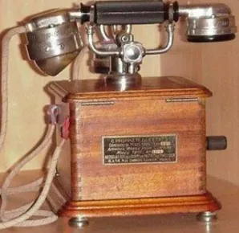

Timeline
A little trip back in time
1st telephone:
by Alexander
Graham Bell
in 1876
Mildé's phone
by Charles Mildé
in 1892

Marty Phone
in 1916
PTT24 mobile 1922
Dial telephone
bakelite in 1941
1st push-button phone
in 1963
1st wireless mobile phone
in 1973
IBM Simon 1992

iPhone X by Apple
in 2017